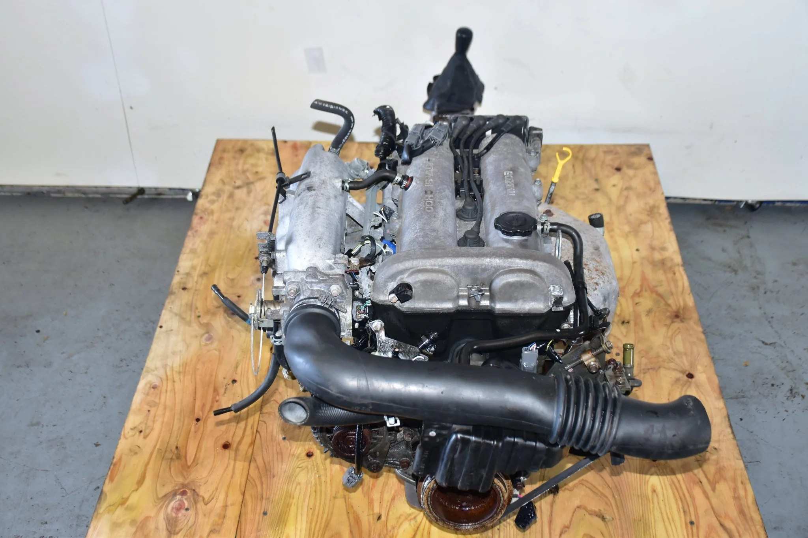
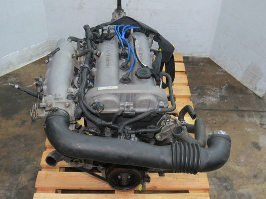

Welcome
Built for the Obsessed.
Explore articles, parts, and community events to get started. Whether you’re wrenching in the garage at 2 AM, dialed in for weekend track days, or cruising late-night meets, AutoLoco is your home base.
- Latest Builds & Guides: Step-by-step modification logs and tuning theory.
- Community Meets & Events: Track local roll-outs and open track day schedules.
- Featured Rides: Member spotlight builds showcasing real-world performance.


About
Born from Late Nights and Bad Ideas.
AutoLoco connects enthusiasts with parts, builds, and community. We started with a simple belief: the best builds come from taking risks, learning with grease on your hands, and chasing raw driving feel.
- Track & Street Proven: If we wouldn't run it on our own machines, we don't feature it.
- Knowledge Sharing: No gatekeeping—just straight advice on specs, fitment, and tuning.
- Community First: Built by enthusiasts, funded by passion, driven by you.
Shop
Precision Hardware & Driver Essentials.
Browse curated parts and accessories engineered for reliability, responsiveness, and aggressive styling.
- Performance & Engine: Intakes, forced induction upgrades, exhaust systems, and ECU tuning.
- Suspension & Footwork: Track-spec coilovers, sway bars, bushings, and lightweight forged wheels.
- Cockpit & Interior: Bolstered seats, telemetry gauges, and quick-release hubs.


Contacts
Let’s Talk Builds, Collabs, & Support.
Get in touch for collaborations, support, or partnerships. Have a question about part fitment or looking to feature your project car?
- General Support: support@autoloco.com
- Build Submissions & Media: features@autoloco.com
- Partnerships & Wholesale: partners@autoloco.com